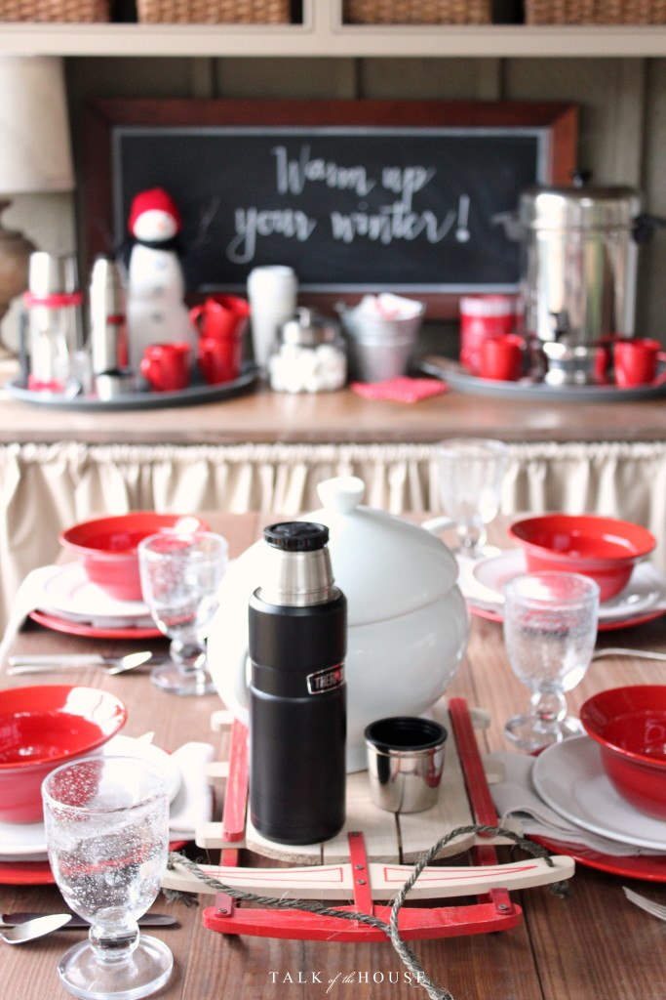

.png)
.PNG)
.PNG)
.PNG)
.PNG)
.PNG)
.JPG)
.JPG)
.PNG)
.PNG)


Here we are… already at the end of January, and I have yet to see even one single solitary snowflake, but has that stopped me from decorating with snow in mind?
Absolutely not.
And I’m not likely to see any snow around here anytime soon.
Our highs next week are to be in the 70’s!
Maybe the groundhog will see his shadow, and we’ll get 6 more weeks of winter.
February is usually when we get our snow anyway. 🙂
 The porch table is quite ready for it. I love the sled from an after-Christmas-sale at our Hallmark store. It had Merry Christmas painted on it, but my husband sanded it off for me with his new sander. The sled makes a great winter centerpiece to hold a soup tureen and thermos.
The porch table is quite ready for it. I love the sled from an after-Christmas-sale at our Hallmark store. It had Merry Christmas painted on it, but my husband sanded it off for me with his new sander. The sled makes a great winter centerpiece to hold a soup tureen and thermos.
And the porch buffet is ready for snow too. It has almost everything needed for a hot cocoa bar…hot milk in the thermoses, hot water in the percolator, various flavors of cocoa mix, marshmallows, mugs and spoons.
It just needs some squirty whipped cream. 🙂
Even the porch seating is calling for snow. I stole some of the “snow” throw pillows off our daughter’s bed and mixed them with a few sweater knit pillows.
The red plates on the wall from Christmas still work well for Valentine’s Day.
This weekend is going to be sunny and warm. I guess I can still enjoy the porch – even if it is dressed for snow. 🙂
And guess what! I have a surprise for you.
Yes, I really do. 🙂
I am doing a guest post about my favorite color over at Design Chic! It’s like a double dose of Talk of the House for you today, and I am sure you can guess my favorite color, right? 🙂 So just click here, to see if you are correct.
And one last thing before we go. I have to say a HUGE thank you to all of you who left such super sweet comments on the last post about my father-in-law’s birthday party. I was truly touched! Unfortunately, 5 minutes before I hit the publish button, my father-in-law had to be rushed by ambulance to the hospital once again. He is doing much better now, but let’s just say that Tuesday was a scary day for all of us.
So here’s to a healthy happy weekend for everyone. 🙂
See you over at Design Chic!


.PNG)
Prayers said for your father-in-law, Kelly! I am so glad you had the wonderful birthday celebration for him. I love your snowy/wintery porch with the cute chalkboard and the sled centerpiece but I do not want that groundhog to see his shadow. I am through with snow and winter and ready for springtime and the beach!
——————————————————————–
Thanks Kathy. My father in law made it home from the hospital over the weekend and seems to be doing well. We appreciate the prayers sooooo much. 🙂
I thought it was going to be cloudy here today, but no…it is sunny…and the groundhog has seen his shadow here. 🙂 We have no chance of snow for sure through the 15th. I guess we will have to drive to the mountains in order to see some.
Have a terrific Tuesday!
Kelly
Kelly,
The little sled is adorable in your centerpiece and I bet your husband loved getting rid of the words with his new sander. Men can become quite helpful with projects with a new power tool. The porch is inviting and beautiful. I hope your father in law’s health improves.
Have a great week!
DiAnne
——————————————————————-
Thank you so much DiAnne. My father in law came home over the weekend.
I need to learn to use those power tools so that I do not have to rely on my husband’s skills. I wonder if I could build some furniture….hmmm….:)
Kelly
At first I wondered.. ok, where is the porch.. then I got it.. how wonderful to have a marvelous indoor porch…and I absolutely love the treat table…. so cosy and inviting!!!
Prayers for Walter and your family..he looks like he is a sweet gentleman. Love your porch with all the red and snow touches..,these are a few of my favorite things!
Love your porch all decorated for winter! The table and sunroom furniture look great, but I think my favorite has to be the hot chocolate station! Love the snowman and all of the great ideas and accessories for hot chocolate. Thanks for sharing….always enjoy your posts and your “red” decorating! Happy Weekend!
Perfect porch! At least with warmer temperatures, you can actually enjoy your lovely creativity! It’s such an inviting space. Of course, the red is gorgeous, but I love how the color of the table and your seating makes the red pop. It is magazine worthy! Thanks for sharing, Kelly. I am headed to see more!!! Love, love it. I will be praying for your dear father-in-law. May God bless all of you. I hope your weekend is pleasant.
Sherry
What a difficult time Kelly. So sorry to hear Walter has been unwell again. This must be such a worry and stressful time for you and all of your family. Hope he’s feeling much better now and that he’s receiving excellent medical care.
As always your home look wonderful …I especially love the cushions. Isn’t it wonderful how red seems to work for so many occasions 🙂
Take care …
Rosemary
Your porch is cozy and inviting as always!! Love the use of the sleigh. I have a an old decorative one in my attic with a scene painted on it. Now I know what to do with it!! Out comes the sander. 😉 Thank goodness we are going to see much warmer temperatures too!! Snow is overrated! <— Says the woman whose poor husband has been walking for over a week because we couldn't even get a 4 wheel drive up our road. 😛 Loved your feature on Design Chic! I have added snippets of red around my home. 🙂 I'm sorry about your father-in-law. I know that roller coaster well from a few years ago with my mother-in-law. I'm glad he's doing better now. Praying for all of you!
Hi Kelly. I will say a prayer for your father-in-law and hope he gets home soon.
I am writing from a beautiful, wintery wonderland here in Nova Scotia. It’s gorgeous outside. Your hot chocolate bar would be very welcome here today. The sled on the table is a brilliant idea and who but you would think to sand it to make it useable throughout the season! Happy to head over to Design Chic to read your post. Wishing you a happy, good news kind of weekend.
Kelly, love thee sleigh on your table…so cute. May I ask where you purchased your wicker porch swing? It looks so comfy and is a better alternative for my house than a wooden swing. I would love to buy one to have this summer. I am retiring as an educator in June of this year and would love to add a porch swing to my porch.
———————————————————————-
Thank you Carol Ann. We purchased that swing over 25 years ago from a store that is no longer in business. Hayneedle has several that are similar, so I would check them out. Congratulations on your upcoming retirement! 🙂
Kelly
It truly was a double treat seeing both your post and the guest post! Enjoyed it so much! The hot chocolate bar was wonderful and I loved the sled on the table. I think I could bundle up and sit out there on your porch in the coldest weather. Making pot of chili and apple pie today. Sincerely wishing Mr. Walter is on the mend and back home again soon. I know he has sweet memories of seeing the family and friends on his birthday on Sunday. I truly enjoyed how you shared your favorite color and followed up with Valentine’s part 1 and 2– perfect!
Sending prayers for your father in law and for your family. And even if there is no snow I love your porch all decked out in red and white for winter, and Valentine’s day!
I loved your post on your father-in-law’s 90th birthday party – it gave me great ideas for some upcoming birthdays. My oldest daughter actually has a birthday this year. She was born on leap year day – February 29th and this is her 9th (actual) birthday!
Get better wishes to your FIL! As Commission Reagan says on Blue Bloods, “family is what makes us strong”.
Like your sled and snowmen!!!! I wanna shop with you.
Always waiting for your next post so I will enjoy this extra one at Design Chic.
PS what is your closest town/city if you are going to see 70?
Just curious, not a stalker! LOL
———————————————————————–
Thanks so much Nan! We are smack dab in the middle of Georgia, and our predicted high today is 79.
Kelly
Many prayers for your father-in-law. I loved the birthday party you threw for him, and I am so glad that his health issue held off so he could enjoy it. I hope he recovers soon, and I will keep him and your family in my prayers. Your porch is my favorite “virtual” place to hang out. I have been trying to figure a way to do a screened porch on my house and still keep a covered outdoor patio as well, but I don’t think I can. However, that is just more verification that I need to just build a house and get what I want!! Our weather here is in the 70’s as well, but we have severe storms AND snow within a day of each other coming in on Monday. Enjoy your gorgeous weather and porch for me!!
Saying prayers for a speedy recovery for your father-in-law. Your snow porch is adorable and the sled -swoon! We’ve just survived storm Jonas and I am happy to report – no snow is forcasted for the weekend – ysy!
Praying for your father in law. Your porch is delightful.
What a gorgeous, gorgeous porch! I love all the red touches, the sled is the cutest. I only wish I have a porch and perhaps, less snow! I hope your father in law is feeling much better now!
——————————————————————-
Thank you Cristina. My father in law came home from the hospital over the weekend and is doing much better. I hope you get a porch one day, and please send some of your snow down to Georgia. I would love to see a light blanket of white here before winter is gone. 🙂
Kelly
Prayers for your father-In-law. More proof that is a blessing to be able to celebrate good times with the people we love. Your snowy porch is so cute. That sled is precious. If I had known that you didn’t get any snow I would have given you a few of the 16 inches ( no exaggeration) that fell in my yard! It was so beautiful! Even with the temps in the 40’s and 50’s this week, we still have atleast 7 inches and school was missed for 6 days. Enjoy your pretty porch and send that sweet FIL some chocolate. The green eyed stomach bug made a visit to our house at about 8:00 last night and I don’t think there is any need for the ugly details. Stay healthy, sweet Kelly!
———————————————————————–
Yuck! Stomach bugs are the worst! I do hope you and all your family are over it by now.
Please send me some of your snow. I don’t believe we are going to get any this year…just like last year. 🙁 No, I do not want 16 inches because our state would absolutely not know what to do with it, but some would be nice.
Take care and stay away from germs. 🙂
Kelly
Everything you post is always a joy to see, Kelly. I also appreciate your sweet spirit and hospitality to others. You inspire me to want to be better about having people over. The invitation, the food, and even the presentation are all part of a gift you give to others. I hope your father-in-law continues to improve and can soon return home.
Your porch is amazing, Kelly and need a seat at the dining table, then later on the swing…stunning!! Hope your father in law is better! Thank you so much for joining us at Design Chic today – we LOVE having you!!
———————————————————————
Thank YOU for the invitation. It was nice to get out of “the house” for awhile. 🙂
My father in law was able to come home over the weekend, so things are looking up around here.
Hope your week is going well. Looking forward to the new book!
Kelly
Wishing your father in law a quick rebound from his latest scare. Sure is stressful for us, and more so for them.
Here in Mo. our weather is up and down almost every day. Not a lot of snow for us so far luckily, but the rains can stay away.
I love your winter setup, and that sled is so cute! I bet it’s hard to decorate in winter mode when your weather is so nice.
Headed over now to see your guest post! Have a great weekend!
Hope your father in law is doing well…keeping you all in my prayers. I’m sure you might have answered this question before, but I’m kind of new to your blog… what kind of pencil/chalk do you use to write on your chalkboards. Your penmanship is perfect … love it!
———————————————————————–
Thanks for your prayers Suzanne. My father in law came home from the hospital over the weekend. 🙂
I am glad you like the chalkboards. To best answer your question about what I write with, I am going to send you to a couple of posts I did a few years ago on lettering. I think you will find the answers there.
http://www.talkofthehouse.com/?s=a+lettering+post+for+you and this one about mostly chalkboard lettering: http://www.talkofthehouse.com/lettering-part-2-chalkboard-tutorial/
Hope these help!
Kelly
Kelly,
I can totally relate—we have to drive to the mountains (2 hours or so) to see snow. But that doesn’t stop me from decorating as though it could snow any minute during the winter. Ha! 🙂
I’m sorry you father in law had another health scare. I hope he makes a quick recovery and can enjoy some time without rushing to the hospital.
I’m headed over to Design Chic—a regular stop, but it will be fun to see what colors you talk about! 😉
xo,
Karen
I hope your father in law is feeling better! Your porch is beautiful as always. You are so lucky you live in a climate where you can use it most of the year. We had 27 inches of snow in NJ last week so we won’t be seeing our deck for awhile. Heading over to Design Chic now…another of my favorite blogs!
Enjoy your weekend!
Shelley
Kelly, first of all I hope your FIL is doing better…prayers are with your family. Second, you are the first person that I have ever heard of that red is their favorite color…it is mine also.
Hope your father-in-law is still getting better. He is a blessed man to have you in his life.
Love the winter/snowman theme. Here in NC we did get blasted with snow last week, but many winters we never even see a flake. I still like to pretend it might snow. Actually, I think that may be the best kind of snow…pretend.